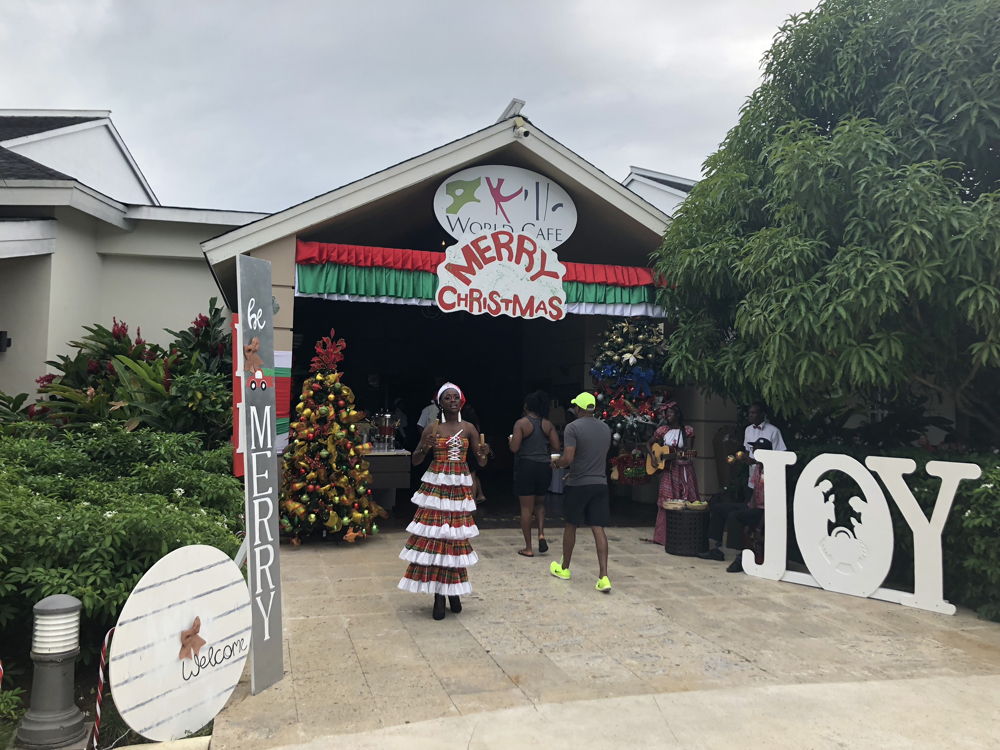
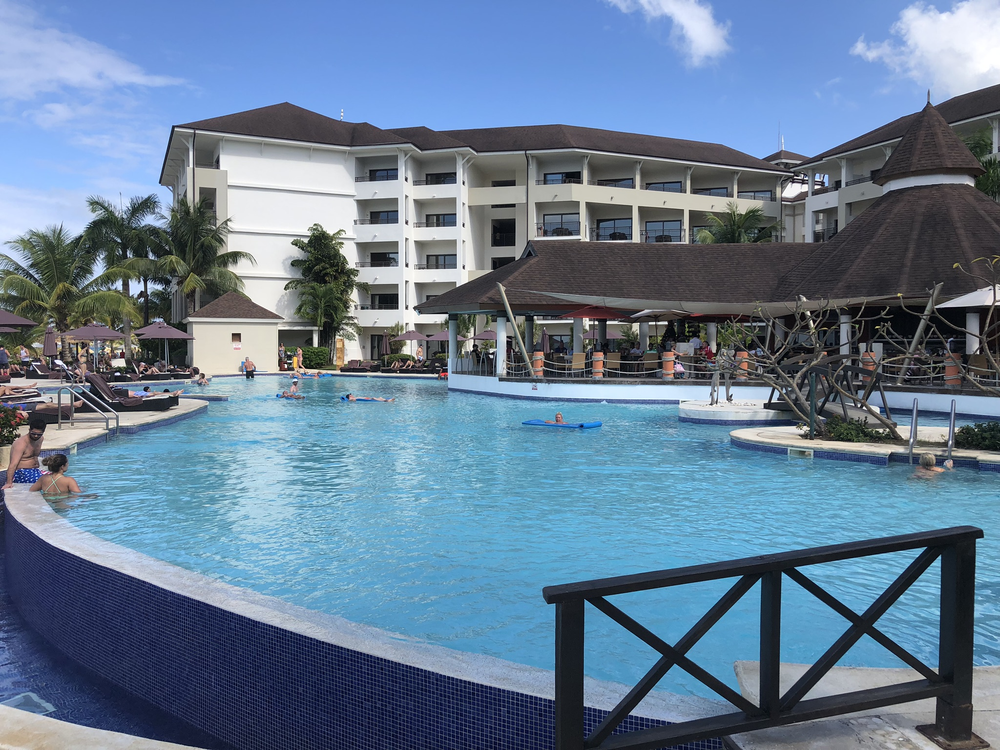

{kind=link}
Vacation to Jamaica
Over the winter break my family decided to go on a trip to Jamaica. My dad researched hotels and things to do an came up with Secrets Wild Orchid, Montego Bay. The website stated, ‘unlimited luxury’ and this hotel did not disappoint! The resort was amazing, it is an all-inclusive, with a no children under 18 policy (my parents liked that). The daily activities including games, water sports, yoga and more. There are beaches with sugary white sand which are perfect for lounging, beach volleyball or snorkeling. There are 10 restaurants and bars to choose from including 24-hour room service! All-inclusive means all meals as well as cocktails are included.
 {kind=link}
{kind=link}
The Dinning
The food was really good, and they had a large variety, from Italian to Chinese to local specialties. My mom was happy because she had a yoga class on the beach every morning. Another cool thing was that right there just a few feet off the shore you could see all sorts of colorful fish, no snorkel or scuba required!
Activites
The resort also offered all sorts of day trips (for an additional fee). They were easy to book, and we always felt is safe. We took 2 trips, one to swim with the dolphins and the other to ATV ride in the country side. Jamaica is a lush, tropical environment, teaming with beautiful plants and wildlife. The surroundings were beautiful, there are rainforest as well as mountains. Every night the sun would set over those mountains and the ocean offering absolutely stunning sunsets with amazing colors. Our last perk was that my brother and I stayed in one room and my parents in another, we really appreciated that!